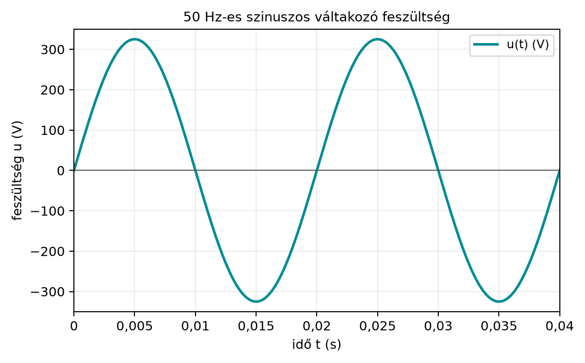

Egy gépjármű-generátor hibakeresésekor gyakori, hogy a
töltőfeszültséget műhelyi multiméterrel egyenfeszültség-állásban
megmérve 14,2 V körüli értéket kapunk, mégis a jármű elektronikája
akadozik. A hiba okát sokszor csak oszcilloszkóppal találjuk meg: a
generátor kimenetén megjelenik egy váltakozó, maradékfeszültségnek
nevezett jel. Ha a szerelő nem érti a váltakozó áramú feszültség
csúcsértékének, effektív értékének és frekvenciájának fogalmát, akkor
ennek a jelnek a mérését és értékelését sem tudja elvégezni.
Ez az alfejezet a váltakozó áramú hálózatok alapjait tanítja: hogyan
keletkezik a szinuszos feszültség, hogyan ábrázoljuk idődiagramon és
fázorral, mit jelent az effektív érték, és hogyan viselkedik az
ellenállás, a tekercs és a kondenzátor váltakozó áramú áramkörben. A
tanultakat később a transzformátor, a háromfázisú rendszer és az
oszcilloszkópos mérések fejezetében is felhasználjuk (A transzformátor és a háromfázisú rendszer, Oszcilloszkóp, váltakozó áramú mérések és félvezetők
vizsgálata).
A váltakozó feszültség legismertebb alakja a szinuszos időfüggvény. Az alábbi ábra egy 50 Hz-es hálózati feszültséget mutat, amelynek csúcsértéke 325 V, effektív értéke pedig 230 V.

Az ábrán jól látható, hogy a feszültség periodikusan váltakozik: pozitív és negatív félperiódus követi egymást. A vízszintes tengelyen az idő (másodperc), a függőleges tengelyen a pillanatnyi feszültség látható. A szinuszos jel két egymást követő azonos fázisú pontja közötti idő a periódusidő, jelen esetben , amiből a frekvencia . A jelfüggvény általános alakja:
ahol a csúcsérték (amplitúdó), a körfrekvencia, pedig a kezdőfázis.
Definíció.
A váltakozó feszültség olyan időben változó feszültség,
amelynek pillanatértéke periodikusan váltakozik, és a pozitív és negatív
félperiódusok átlaga nulla. A váltakozó áram hasonlóan
periodikusan változó irányú áram.
Definíció.
A periódusidő
()
az a legrövidebb idő, amely alatt a jel pontosan megismétlődik. A
frekvencia
()
az egy másodperc alatti periódusok száma:
Definíció.
A csúcsérték (amplitúdó,
)
a váltakozó feszültség legnagyobb abszolút pillanatértéke. A
effektív érték
()
az a képzeletbeli egyenfeszültség, amely ugyanakkora hőteljesítményt
fejt ki egy ellenálláson, mint az adott váltakozó feszültség.
Szinuszos jel esetén:
és hasonlóan áramra:
Az effektív érték levezetése a pillanatérték négyzetének átlagából származik: a feszültség pillanatértékét négyzetre emeljük, átlagoljuk egy periódusra, majd gyököt vonunk (ezért nevezik négyzetes középértéknek, RMS-értéknek).
Összefüggés.
A fázor (forgó vektor) ábrázolásban a szinuszos mennyiséget egy olyan
vektorral szemléltetjük, amelynek hossza a csúcsérték (vagy az effektív
érték), és a referenciairánnyal bezárt szöge a fázisszög. A fázorok
alkalmazása azért hasznos, mert a szinuszos jelek összegzése így
vektorösszeadássá egyszerűsödik.
Ohmos ellenállás.
Az ellenálláson a feszültség és az áram pillanatértéke egyenesen
arányos, ezért fázisban vannak: egyszerre érik el a
csúcsértéket. Az áramkör jellemzője:
Ideális tekercs (induktivitás).
A tekercsben az önindukció miatt a feszültség az áram változási
sebességével arányos. Szinuszos áram esetén a feszültség
-kal
siet az áramhoz képest. A tekercs váltakozó áramú
ellenállása, az induktív reaktancia:
Mértékegysége ohm (). A reaktancia a frekvenciával arányosan nő: egyenáramon () a tekercs rövidzárként viselkedik, nagyobb frekvencián viszont egyre nagyobb az ellenállása.
Ideális kondenzátor (kapacitás).
A kondenzátorban az áram a feszültség változási sebességével arányos. A
kondenzátor feszültsége
-kal
késik az áramhoz képest. A kapacitív
reaktancia:
A kapacitív reaktancia a frekvenciával fordítottan arányos: egyenáramon a kondenzátor szakadásként viselkedik, nagy frekvencián viszont közel rövidzárként.
A fázisviszonyokat a következő táblázat foglalja össze:
| Elem | Feszültség–áram viszony | Reaktancia/impedancia |
|---|---|---|
| azonos fázisban | ||
| siet -kal | ||
| késik -kal |
Soros RL kör.
Egy
ellenállásból és
induktivitásból álló soros körben az eredő impedancia:
A fázisszög azt mutatja meg, hogy a feszültség mennyivel siet az áramhoz képest (). Az áram effektív értéke:
Soros RC kör.
Hasonlóan:
Itt a feszültség késik az áramhoz képest.
Soros RLC kör.
Az induktív és kapacitív reaktancia részben kioltja egymást, mert
ellentétes fázisban szerepelnek. Az eredő impedancia:
a fázisszög:
Ha , az áramkör induktív jellegű (a feszültség siet), ha , akkor kapacitív jellegű.
A fázorábrán az áram a vízszintes referencia: az vele egy irányba, az felfelé (+90°), az lefelé (−90°) mutat; mivel , az eredő kb. 78°-kal késik az áramhoz képest (kapacitív jelleg). A rezonanciagörbén látszik, hogy -en a kör messze van az rezonanciától, ahol az áram lenne. Az interaktív változatban , , , és állítható, a 3. és az 5. feladat adatai egy gombbal betölthetők.
Soros rezgőkör.
Amikor
,
azaz:
a kör rezonanciában van. A rezonanciafrekvencia:
Rezonanciában az impedancia minimális, , az áram maximális. Ekkor a tekercsen és a kondenzátoron külön-külön a tápfeszültségnél sokkal nagyobb feszültség is felléphet – ezt a szerelőnek nagyon komolyan kell vennie.
Párhuzamos RL, RC és RLC körök.
Párhuzamos kapcsolásnál az áramok fázishelyzetét célszerű
admittanciákkal (vezetőképességekkel) számolni. Az impedancia reciproka
az admittancia, jele
,
mértékegysége siemens (S). Párhuzamos RLC körben az ágak feszültsége
közös, az ágáramok vektorosan összegződnek. A vezetőképesség
(konduktancia)
,
az induktív szuszceptancia
,
a kapacitív szuszceptancia
;
az eredő admittancia és az áram:
Az ágáramok: , , ; az és egymással ellentétes fázisú, ezért részben kioltják egymást. Számpélda. , , , esetén , , , így és ; a kör induktív jellegű, mert . Párhuzamos rezgőkör esetén (, a rezonanciafrekvencia ideális elemekre ugyanaz, ) az eredő admittancia minimális, tehát az impedancia maximális, így az áramfelvétel kicsi.
Elektromágneses hullámok és rádiózavar. A gyorsan változó áram és feszültség elektromágneses hullámokat sugároz; a hullámhossz (). A járműben ilyen zavarforrás a gyújtás szikrája, a kommutátoros motorok (ablaktörlő, ablakemelő, ventilátor) szikrázása és a kapcsolóüzemű tápegységek, átalakítók; a zavar a rádió zúgásaként, a jeladók és buszjelek torzulásaként jelentkezhet. A védekezés: zavarszűrő kondenzátorok és fojtók, árnyékolt vezetékek, jó testkötések, szikramentesítő ellenállásos gyertyapipa és gyertyakábel. A járművek zavarkibocsátására és zavartűrésére uniós és ENSZ-EGB előírások vonatkoznak (ellenőrizendő: a hatályos EMC-előírások, pl. ECE R10).
Definíció.
A látszólagos teljesítmény a mért effektív feszültség
és áram szorzata:
Mértékegysége voltamper (VA).
A hatásos teljesítmény az áramkörben ténylegesen hővé,
mozgássá vagy más hasznos munkává alakuló teljesítmény:
Mértékegysége watt (W).
A meddő teljesítmény az a teljesítmény, amely a tekercs
mágneses tere és a kondenzátor elektromos tere között periodikusan
oda-vissza áramlik, de nem végez hasznos munkát:
Mértékegysége voltamper reaktív (var).
A
a hatásos teljesítménytényező (teljesítményfaktor),
amely azt mutatja meg, mekkora a látszólagos teljesítményből a
ténylegesen hasznosított rész.
Összefüggés.
A három teljesítmény derékszögű háromszöget alkot:
Továbbvitt eredmény.
Az itt bevezetett effektív érték és impedancia számítási módszere minden
későbbi váltakozó áramú mérés és villamosgép-vizsgálat alapja: a
transzformátor és a háromfázisú rendszer (A
transzformátor és a háromfázisú rendszer) valamint az
oszcilloszkópos mérés (Oszcilloszkóp, váltakozó
áramú mérések és félvezetők vizsgálata) ezekre épít.
1. példa – Soros RL kör számítása.
Egy 230 V-os váltakozó áramú relé (mágneskapcsoló) tekercsét a hálózatra
kapcsoljuk. A tekercs egyenáramú ellenállása
,
induktivitása
(tanulási példaadatok; ellenőrizendő: katalógusadat). A hálózati
feszültség
,
a frekvencia
.
Számítsuk ki az induktív reaktanciát, az impedanciát, az áramot, a
fázisszöget és a teljesítményeket!
Megoldás.
Az induktív reaktancia:
Az impedancia:
Az áram:
A fázisszög:
A hatásos teljesítmény:
A meddő teljesítmény:
A látszólagos teljesítmény:
Ellenőrzés: és , tehát az eredmények összhangban vannak. A nagyságrend is életszerű: egy 230 V-os váltakozó áramú relétekercs néhány VA látszólagos teljesítményt vesz fel (a hatásos teljesítmény ennél kisebb), nem száz- vagy ezer voltampert.
2. példa – Oszcilloszkópos mérés kiértékelése.
Egy jelalakot oszcilloszkóppal vizsgálunk. A függőleges osztás 2 V/div,
a vízszintes 5 ms/div. A jel csúcsa 5 osztást ér, a periódus 4 osztást
foglal el. Számítsuk ki a csúcsfeszültséget, az effektív értéket, a
periódusidőt és a frekvenciát!
Megoldás.
A csúcsfeszültség:
Az effektív érték:
A periódusidő:
A frekvencia:
Ellenpélda.
Ha valaki a csúcsértéket effektív értéknek veszi, akkor 10 V-os terhelő
hatást feltételez, pedig a hőhatás szempontjából csak 7,07 V
egyenfeszültséggel egyenértékű a jel. Ez a hiba fűtőszálas terhelésnél,
izzóknál vagy ellenállásos biztonsági áramköröknél téves következtetésre
vezet.
A váltakozó áramú jelek mérésére a multiméter RMS-állása vagy az
oszcilloszkóp a legalkalmasabb. Az oszcilloszkóp előnye, hogy a
csúcsértéket, periódusidőt, frekvenciát és a jel alakját egyszerre
mutatja meg. A mérés előtt a csatorna nullszintjét, a feszültség-osztást
(V/div) és az idő-osztást (s/div) a jel nagyságához kell állítani.
Az effektív értéket a multiméter RMS-állása általában szinuszos jelre
kalibráltan jeleníti meg; torzított jel esetén a valódi effektív értéket
csak true RMS műszer mutatja.
Az ellenőrzés során győződjünk meg arról, hogy a mért csúcsérték és
frekvencia összhangban van a várttal: generátor esetében a maradék
váltakozó komponens nem szinuszos, ezért true RMS műszerrel vagy
csúcstól csúcsig értékként a gyártói határhoz hasonlítjuk (a határérték
típusonként eltér; ellenőrizendő: a gyártói javítási adat), míg hálózati
jelnél 230 V effektív, 50 Hz.
Figyelem.
A hálózati feszültség mérése életveszélyes. Tanműhelyi környezetben csak
leválasztó transzformátorral ellátott mérőhelyen, oktató felügyelete
mellett, az adott mérési kategóriájú (CAT) mérővezetékekkel dolgozz.
Ahol a tanulási cél megengedi, a mérést törpefeszültségű (pl. 12 V-os)
jelgenerátoros mérőhelyen végezzük.
Egy műhelyben egy személyautó tulajdonosa azt panaszolja, hogy a
műszerfalon időnként halványan villognak a jelzőlámpák, és a rádióból
halk zúgás hallatszik. A szerelő a generátor B+ kimenetét
oszcilloszkóppal vizsgálja. Az egyenfeszültség-szint 14,1 V, de a
váltakozó maradékjel csúcstól csúcsig értéke
.
A maradékjel nem szinuszos (a háromfázisú egyenirányítás hullámossága),
ezért effektív értéke nem számítható a
összefüggéssel; a szerelő az értéket true RMS műszerrel vagy a gyártói
csúcstól csúcsig határral veti össze (ellenőrizendő: gyártói adat).
Ez a nagy maradékfeszültség gyakran a diódahíd egyik diódájának
meghibásodására utal. A generátor szétszerelése után valóban egy nyitott
dióda található. A kicserélt diódahíd után a maradékfeszültség
csúcstól csúcsig érték alá csökken, a villogás és a zúgás
megszűnik.
A tanulság: a váltakozó áramú összetevők ismerete nélkül a hibát nem
lehetett volna diagnosztizálni, mert az egyenfeszültség-érték önmagában
elfogadhatónak tűnt.
Hiba 1.
A csúcsérték és az effektív érték összekeverése. A szerelő
oszcilloszkópon lát egy 10 V-os csúcsot, és azt jelenti, hogy „10 V-os a
jel”. A fűtőteljesítmény vagy a gyakorlati terhelhetőség szempontjából
azonban az effektív érték a mérvadó, ami itt kb. 7,07 V. Helyes
gyakorlat: mindig adjuk meg az effektív értéket vagy jelezzük,
hogy csúcsértékről van szó.
Hiba 2.
A fázisszög elhanyagolása a teljesítmény számításánál. A hálózati
áramfelvételből egyszerűen
teljesítményt számol a szerelő, és nem veszi figyelembe a
-t.
Induktív terhelésnél (pl. motor, relétekercs) a hatásos teljesítmény
ezzel túlbecsült lesz, ami hibás biztosíték-, kábel- vagy
hűtésméretezéshez vezet. Helyes gyakorlat: motoroknál
és tekercseknél mindig
képletet használjunk.
Hiba 3.
A reaktanciák előjelének helytelen kezelése soros RLC körben. Egyes
tanulók az
és
értékeket egyszerűen összeadják, pedig a fázisviszonyok miatt a
reaktanciák egymást részben kioltják: a kapacitív reaktancia negatív
előjellel jelenik meg az
különbségben. Helyes gyakorlat: az impedanciát mindig
képlettel számoljuk, és ne feledkezzünk meg a rezonancia
lehetőségéről.
A válaszok a Megoldások elején, az „Önellenőrzés – válaszok” részben találhatók.
1. feladat (A).
Számítsd ki 50 Hz-en annak a tekercsnek az induktív reaktanciáját,
amelynek induktivitása
.
2. feladat (A).
Egy
kondenzátor kapacitív reaktanciáját keressük 50 Hz-en és 5 kHz-en.
Melyik frekvencián nagyobb a reaktancia?
3. feladat (B).
Egy soros RLC kör adatai:
,
,
,
,
.
Számítsd ki: - az induktív és kapacitív reaktanciát, - az impedanciát, -
az áram effektív értékét, - a tekercs és a kondenzátor kivezetései
között mérhető feszültséget.
4. feladat (B).
Oszcilloszkópon egy jelet vizsgálsz. A feszültség-osztás 5 V/div, az
idő-osztás 2 ms/div. A jel 6 osztást foglal el függőlegesen, a periódus
4 osztást vízszintesen. Add meg a csúcsértéket, az effektív értéket, a
periódusidőt és a frekvenciát.
5. feladat (C).
Egy soros rezgőkört szeretnénk vizsgálni:
,
,
,
tápfeszültség
effektív. Számítsd ki a rezonanciafrekvenciát, majd rezonancián az
áramot és a tekercsen, illetve kondenzátoron fellépő feszültséget.
Hasonlítsd össze a tápfeszültséggel, és magyarázd meg, miért veszélyes
ez a jelenség!
6. feladat (D).
Egy járműgenerátor kimenetét oszcilloszkóppal vizsgáljuk. Az
egyenfeszültség-szint 14,0 V, a váltakozó maradékjel csúcstól csúcsig
értéke 0,6 V. Értékeld a mérési eredményt! Milyen hibára utalhat, és
milyen további ellenőrzést végeznél?
1. feladat megoldása.
Adott:
,
.
Induktív reaktancia:
Ellenőrzés: a nagyságrend megfelelő, hiszen egy 0,4 H-s fojtótekercs 50 Hz-en száz ohm nagyságrendű.
2. feladat megoldása.
Adott:
,
,
.
50 Hz-en:
5 kHz-en:
A reaktancia 50 Hz-en nagyobb. Minél nagyobb a frekvencia, annál kisebb a kapacitív reaktancia.
3. feladat megoldása.
Adott:
,
,
,
,
.
Induktív reaktancia:
Kapacitív reaktancia:
Impedancia:
Áram:
Tekercs feszültsége:
Kondenzátor feszültsége:
Ellenőrzés: a kör kapacitív jellegű, mert , és a kondenzátoron nagyobb feszültség is eshet, mint a tápfeszültség.
4. feladat megoldása.
A csúcsfeszültség:
.
Effektív érték:
.
Periódusidő:
.
Frekvencia:
.
Ellenőrzés:
,
az eredmény konzisztens.
5. feladat megoldása.
Adott:
,
,
,
.
Rezonanciafrekvencia:
Ez közel van a hálózati 50 Hz-hez, ami életszerű.
Rezonancián
,
ezért az impedancia
.
Az áram:
.
A tekercs és kondenzátor feszültsége rezonancián:
Ez a tápfeszültség több mint tízszerese. Valós veszély: a rezgőkör elemein ilyen túlfeszültség is megjelenhet, ezért a méretezést és a szigetelést ennek megfelelően kell elvégezni; tanműhelyben ilyen kísérlet csak feszültségkorlátozott, oktató által ellenőrzött körben végezhető.
6. feladat megoldása.
A mért váltakozó maradékjel csúcstól csúcsig értéke
.
A generátor maradékjele nem szinuszos, ezért az effektív értéket nem
szabad a
képlettel kiszámítani; a mért csúcstól csúcsig értéket a gyártói
csúcstól csúcsig határral hasonlítjuk össze (vagy true RMS műszerrel
mérjük az AC-összetevőt). Ez az érték a gyártói javítási adatok szerint
gyakran elfogadhatatlan (a határ típusonként eltér – ellenőrizendő: a
gyártói adat). A túl nagy maradékfeszültség leggyakoribb oka a generátor
diódahídjának hibája (pl. nyitott vagy rövidzárlatos dióda).
További ellenőrzések: a generátor diódáinak ellenőrzése multiméterrel, a
feszültségesés mérése a B+ és test közötti vezetékeken, valamint az
ékszíj feszességének ellenőrzése. A hiba megszüntetése utáni méréssel
ellenőrizzük, hogy a maradékfeszültség a gyártói határ alá csökkent.
A váltakozó feszültség és áram periodikusan változtatja irányát. A
szinuszos jel időfüggvénye
,
ahol
,
a periódusidő
.
Az effektív érték a csúcsértékből
képlettel számítható, és a hőhatás szempontjából az egyenárammal
egyenértékű.
Ellenálláson a feszültség és áram fázisban vannak; a tekercs feszültsége
-kal
siet az áramhoz, a kondenzátoré pedig
-kal
késik. A reaktanciák:
,
.
Soros RLC kör impedanciája
,
a fázisszög
.
Rezonancia akkor lép fel, ha
,
ekkor
,
és a tekercsen/kondenzátoron a tápfeszültségnél jóval nagyobb feszültség
is lehet.
A teljesítmények: látszólagos
,
hatásos
,
meddő
,
a teljesítménytényező
.
Továbbvitt eredmény. Az effektív érték és az impedancia
számítási módszere elengedhetetlen a transzformátor és a háromfázisú
rendszer (A transzformátor és a háromfázisú
rendszer) megértéséhez, valamint az oszcilloszkópos váltakozó áramú
mérések (Oszcilloszkóp, váltakozó áramú mérések és
félvezetők vizsgálata) kiértékeléséhez. A hálózati feszültség mérése
mindig életvédelmi szabályok szerint történjen.
A fejezet az általános elektrotechnikai alapokra épül, amelyek az MSZ
EN 60617 jelképrendszerével és a gyártói mérési gyakorlattal összhangban
állnak. A gyakorlati mérési határértékek (generátor maradékfeszültség,
CAT-kategória) gyártói és hatályos munkavédelmi előírások alapján
ellenőrizendők.
Ellenőrizendő: a generátor maradékfeszültség megengedett határa (gyártói
adat), a mérési kategóriák (MSZ EN 61010 sorozat), valamint a tanműhelyi
oszcilloszkópos mérés helyi munkavédelmi szabályai.